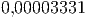
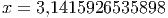
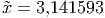
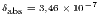
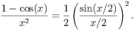

2.5 Cancelamento catastrófico
Quando fazemos subtrações com números muito próximos entre si ocorre o
cancelamento catastrófico, onde podemos perder vários dígitos de precisão em
uma única subtração.
Exemplo 2.5.1. Efetue a operação
usando arredondamento com seis dígitos significativos e observe a diferença se
comparado com resultado sem arredondamento.
Solução. Os números arredondados com seis dígitos para a mantissa
resultam na seguinte diferença
Observe que os erros relativos entre os números exatos e aproximados no lado
esquerdo são bem pequenos,
e
enquanto no lado direito o erro relativo é enorme:

Exemplo 2.5.2. Considere o problema de encontrar as raízes da equação de
segundo grau
usando seis dígitos significativos.
Aplicando a fórmula de Bhaskara com , 
e  , temos o discriminante:
, temos o discriminante:
e as raízes:

Então, as duas raízes são:
e
Agora, os valores das raízes com seis dígitos significativos deveriam ser
Observe que um raiz saiu com seis dígitos significativos corretos, mas a outra não
possui nenhum dígito significativo correto.
Observação 2.5.1. No exemplo anterior  é muito maior que  , ou seja,
, ou seja,
 , logo a diferença
, logo a diferença
estará próxima de zero. Uma maneira padrão de evitar o cancelamento
catastrófico é usar procedimentos analíticos para eliminar essa diferença. Abaixo
veremos alguns exemplos.
Exemplo 2.5.3. Para eliminar o cancelamento catastrófico do exemplo
anterior, usamos a seguinte expansão em série de Taylor em torno da origem

Substituindo na fórmula de Bhaskara, temos:
Observe que

é um número pequeno e por isso a expansão faz sentido.
Voltamos no exemplo anterior e calculamos as duas raízes com o nova expressão
Observe que o efeito catastrófico foi eliminado.